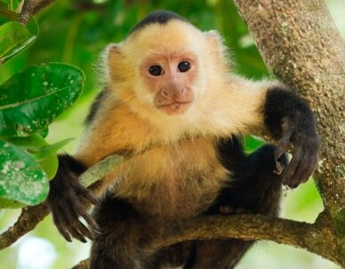

Quiénes somos
Nacimos en 2012 con un solo animal rescatado. Hoy somos un equipo de 60 personas trabajando en 14 países para devolverle la libertad a la fauna silvestre.
Rescatar, rehabilitar y liberar especies silvestres víctimas del tráfico ilegal de fauna, garantizando su bienestar físico y psicológico durante cada etapa del proceso.
Un mundo donde ningún animal silvestre viva en cautiverio ilegal. Donde cada especie pueda desarrollarse en su hábitat natural, libre de explotación humana.
Lo que nos guía
01
Publicamos cada informe financiero y de impacto. Sabés exactamente a dónde va cada peso que donás.
02
Cada decisión pasa primero por el bienestar del animal. No el nuestro, no el del donante: el del animal.
03
Trabajamos con comunidades locales para que la conservación tenga raíces, no solo visitas.
04
Sin conciencia no hay cambio. Por eso parte de nuestro trabajo es enseñar, siempre.
Las personas detrás
Fundadora & Directora
Bióloga especializada en fauna silvestre. 20 años rescatando animales en América Latina.
Veterinario Jefe
Especialista en medicina de animales exóticos. Ha rehabilitado más de 200 felinos silvestres.
Coordinadora de Campo
Lidera los operativos de rescate en zonas de alto riesgo. Ex guardaparques nacional.
Director de Comunicación
Cuenta las historias que el mundo necesita escuchar para actuar a favor de la fauna silvestre.